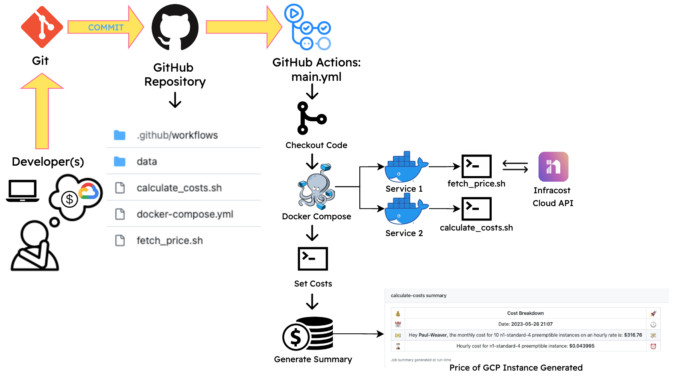

This project is focused on cost management for Google Cloud Platform (GCP) instance types. It involves the creation of a GitHub Actions pipeline, using Docker containers to access the Infracost API and calculate monthly prices for a specific GCP instance type.
The Docker setup involved two services, service1 and service2, running in separate containers. Docker Compose was utilized for data sharing between these services. Bash scripts (fetch_price.sh and calculate_costs.sh) were used to fetch pricing data and perform the calculations.
GitHub Actions Pipeline is triggered on each main branch push, and includes steps for code checkout, building and running Docker services, setting cost values, and generating a summary output.
